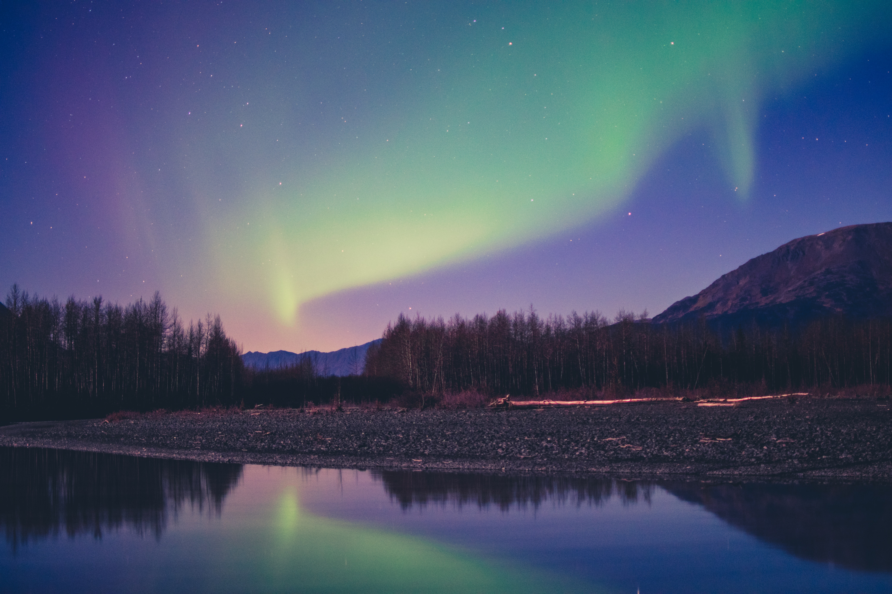

Energy of Tomorrow
The back-bone of our entire national power grid is natural gas. Due to the rising concerns of natural gas, many believe we need to go “all green”, but let’s face it… wind, solar, and hydro-electric power simply aren’t going to cut it. There is only one way to “go green” and still have a power source efficient enough to support and sustain a population of our size. Nuclear energy is the most efficient and sustainable means of creating electrical power that we currently have access to, and with a little more research and testing we could have it be even more so.
Where Could We Go?
With nuclear energy at our disposal, the possibilities are limitless. Newfound research and testing has shown us the way to create “micro-reactors”, which could allow us to bring efficient and potent electrical power to every corner of the globe! Now, even previously inhabitable places can be made into beautiful civilizations.
The rural alaskan debate. To illustrate our point, there has been a debate going for quite some time now. There are many rural Alaskan towns which require diesel fuel to maintain themselves, as all of their electrical power comes from diesel generators. The problem is, they live extremely far away from any oil refineries and it all needs to be flown in to them, which can be very hazardous. These “micro-reactors” could change every of their lives in very empowering ways. With just one single micro-reactor, they could have the potential of powering up thousands of homes! Add a few more, and before you know it you could power an entire city with clean and powerful energy.
With recent discoveries and continuing research in nuclear energies, we are finding ways to increase the lifespan of fuel and make them much more effective. With this fuel embedded in portable reactors, we have the means to conduct deep space exploration missions. Not only will we be able to explore the far reaching expansions of space, but we will be able to explore and set up colonies right here in our very own solar system! This energy could be used to mine on Mars, and drill for more fuel and water to sustain our systems set up there. The moon’s surface has been proven to contain a very potent type of material, critical in researching and developing something right out of science fiction: fusion reactors.